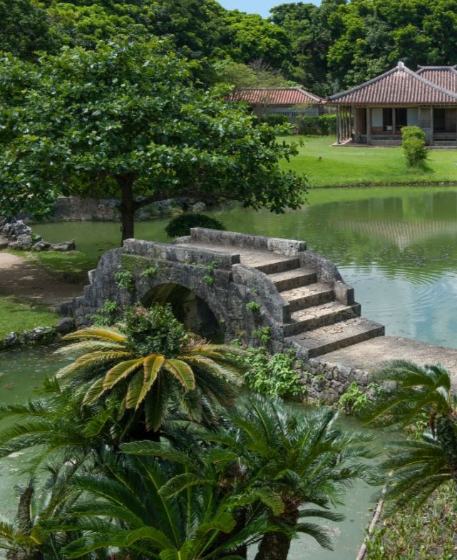
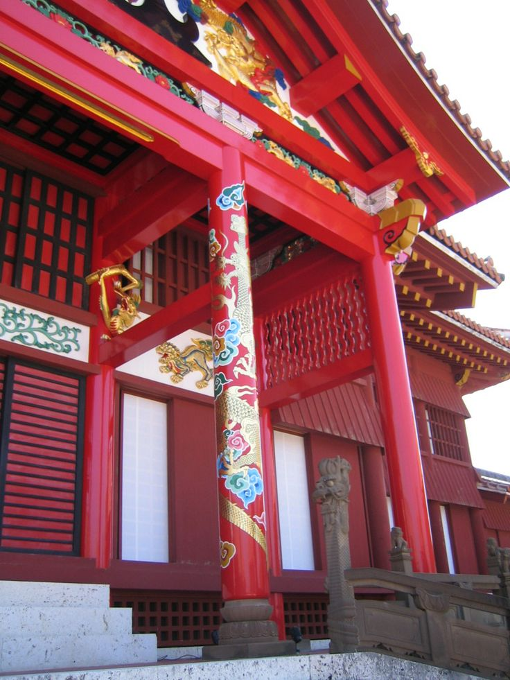
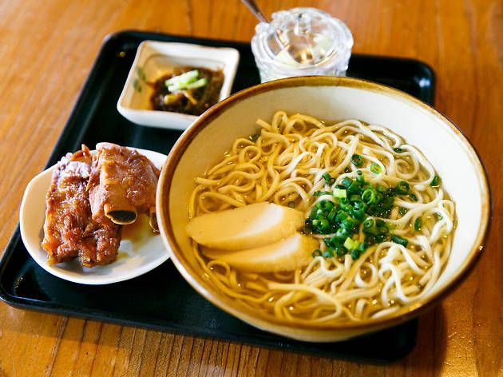

À propos de Shuri
Le Château de Shuri, situé à Okinawa, est un site historique inscrit au patrimoine mondial de l’UNESCO. Ancienne résidence des rois de Ryukyu, il est célèbre pour son architecture unique, ses portes rouges et ses jardins paisibles.
Activités à faire
- Visite guidée du château et des salles historiques
- Découverte des jardins japonais traditionnels
- Photographie des portes rouges et des toits ornés
- Ateliers culturels et artisanat local
- Dégustation de spécialités locales
Aperçu



Vidéo de présentation
Informations pratiques
Adresse : Naha, Okinawa, Japon
Horaires :8h30 – 19h00
Prix :820 ¥ par adulte (environ 2 €)
Comment s’y rendre ?
- Avion : Vol jusqu’à l’aéroport de Naha (le plus rapide depuis l’étranger).
- Monorail : Depuis l’aéroport, prendre le monorail jusqu’à la station Shuri.
- Bus : Plusieurs lignes de bus desservent le site depuis le centre-ville.
Conseil VP Tours : le monorail est le moyen le plus simple et le plus pratique pour les visiteurs.